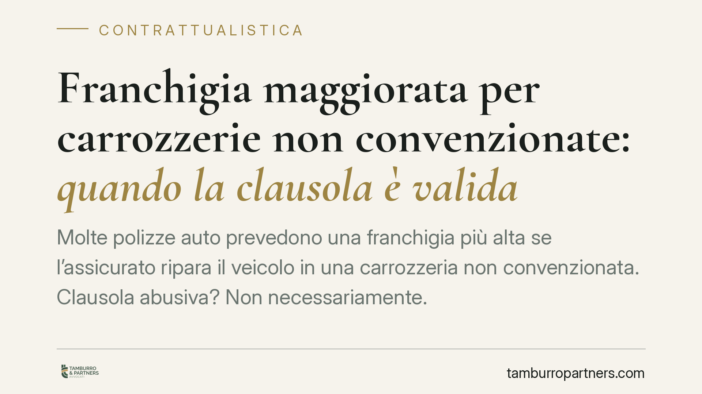

Franchigia maggiorata per carrozzerie non convenzionate: quando la clausola è valida
Molte polizze auto prevedono una franchigia più alta se l'assicurato ripara il veicolo in una carrozzeria non convenzionata. Clausola abusiva? Non necessariamente. La valutazione va condotta caso per caso, verificando lo squilibrio contrattuale e l'eventuale trattativa individuale. Ecco cosa dicono il Codice del Consumo e come muoversi in caso di contestazione.

Il caso: franchigia differenziata a seconda della carrozzeria
È una previsione ricorrente nei contratti di assicurazione danni: la polizza rimborsa il sinistro con una franchigia ridotta (o nulla) se la riparazione avviene presso una carrozzeria convenzionata con la compagnia, e con una franchigia più elevata se l'assicurato sceglie liberamente un'officina esterna alla rete convenzionata.
La franchigia è la quota di danno che resta a carico dell'assicurato. Una franchigia maggiorata, quindi, riduce il rimborso e di fatto orienta la scelta verso i partner della compagnia. Da qui la domanda: si tratta di una clausola vessatoria, come tale nulla nei rapporti con i consumatori?
Inquadramento normativo: artt. 33 e 34 del Codice del Consumo
Il riferimento è il d.lgs. n. 206 del 2005 (Codice del Consumo). L'art. 33 definisce vessatorie le clausole che, malgrado la buona fede, determinano a carico del consumatore un significativo squilibrio dei diritti e degli obblighi derivanti dal contratto. La norma contiene un elenco di clausole che si presumono vessatorie salvo prova contraria, ma resta ferma la clausola generale dello squilibrio.
Determinante è l'art. 34. Il comma 4 esclude la vessatorietà per le clausole che riproducono disposizioni di legge o attuano principi di convenzioni internazionali. Soprattutto, il comma 5 stabilisce che, quando il professionista sostiene che una clausola è stata oggetto di trattativa individuale, l'onere di provarlo grava su di lui. Non è quindi il consumatore a dover dimostrare l'assenza di negoziazione.
Va poi ricordato l'art. 34, comma 2: la valutazione del carattere vessatorio non riguarda l'adeguatezza del corrispettivo, purché individuato in modo chiaro e comprensibile. Il profilo della trasparenza resta perciò centrale.
Perché la clausola non è automaticamente abusiva
La Cassazione ha chiarito che una franchigia differenziata non è, di per sé, vessatoria. La logica è economica prima ancora che giuridica: la convenzione con determinate carrozzerie consente alla compagnia di controllare i costi delle riparazioni e di contenere il rischio di sovrafatturazione. A fronte di questo vantaggio gestionale, la compagnia può legittimamente offrire condizioni migliori a chi utilizza la rete convenzionata.
La clausola diventa problematica solo se, in concreto, l'entità della franchigia maggiorata è tale da svuotare la libertà di scelta del consumatore o da tradursi in uno squilibrio significativo non giustificato. Occorre quindi una valutazione caso per caso, che tenga conto della misura della maggiorazione, della trasparenza con cui è stata comunicata e dell'eventuale trattativa.
Gli estremi della pronuncia
La notizia riferisce di un orientamento della Corte di Cassazione secondo cui simili clausole non sono automaticamente abusive e vanno vagliate in concreto. Al momento della redazione non risultano pubblicati gli estremi identificativi della decisione (numero, sezione e anno). Invitiamo pertanto a considerare il presente contributo come illustrazione del quadro normativo e dei principi applicabili, e non come commento a una sentenza puntuale, i cui riferimenti andranno verificati alla pubblicazione ufficiale.
Implicazioni pratiche
Per il consumatore. La sola presenza di una franchigia maggiorata non basta a ottenerne la nullità. Conta l'analisi concreta: quanto è alta la maggiorazione, come è stata presentata, se vi è stato reale spazio di negoziazione.
Per le compagnie. La differenziazione è ammessa, ma va sostenuta da trasparenza informativa e da una misura proporzionata. In giudizio, se si invoca la trattativa individuale, spetta alla compagnia provarla.
Per le carrozzerie non convenzionate. La clausola incide sulla clientela, orientandola verso la rete. Restano gli spazi di tutela della concorrenza, ma sul piano civilistico la validità della clausola non è esclusa in astratto.
Cosa fare in concreto
- Verifica la formulazione della clausola in polizza: importo della franchigia standard e di quella maggiorata, condizioni di applicazione.
- Controlla la trasparenza: valuta se la differenza era chiara e comprensibile al momento della sottoscrizione, come richiesto dall'art. 34, comma 2, Cod. Consumo.
- Ricostruisci le modalità di sottoscrizione: se contesti la vessatorietà e la compagnia invoca la trattativa individuale, ricorda che l'onere di provarla grava sul professionista ex art. 34, comma 5.
- Documenta lo squilibrio: raccogli i dati sull'entità della maggiorazione rispetto al costo effettivo della riparazione.
- Valuta i presupposti prima di agire: è opportuno accertare, anche con l'ausilio di un professionista, se sussistano in concreto i presupposti di vessatorietà ex art. 33 Cod. Consumo prima di formalizzare una contestazione.
---
Contributo informativo a cura di Tamburro & Partners – Avv. Giuseppe Tamburro. Non costituisce parere legale.
Ogni contratto ha il suo equilibrio.
Se vuoi una revisione delle clausole o una redazione su misura, scrivi allo studio. Ti rispondiamo entro un giorno lavorativo.